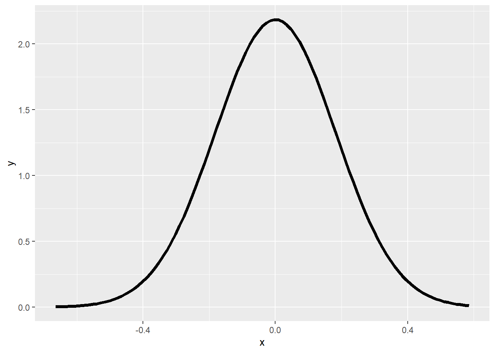
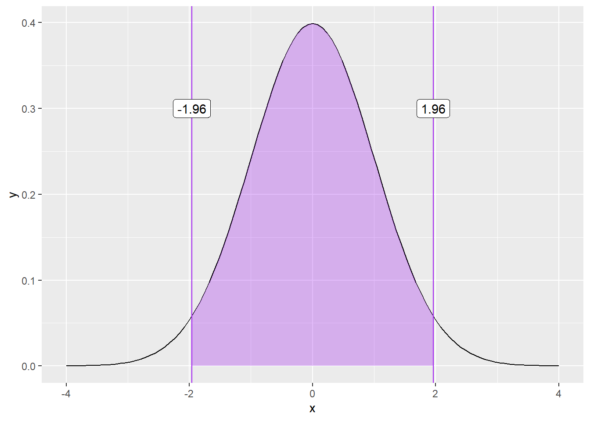
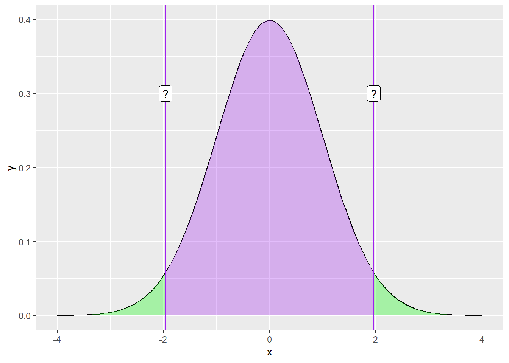
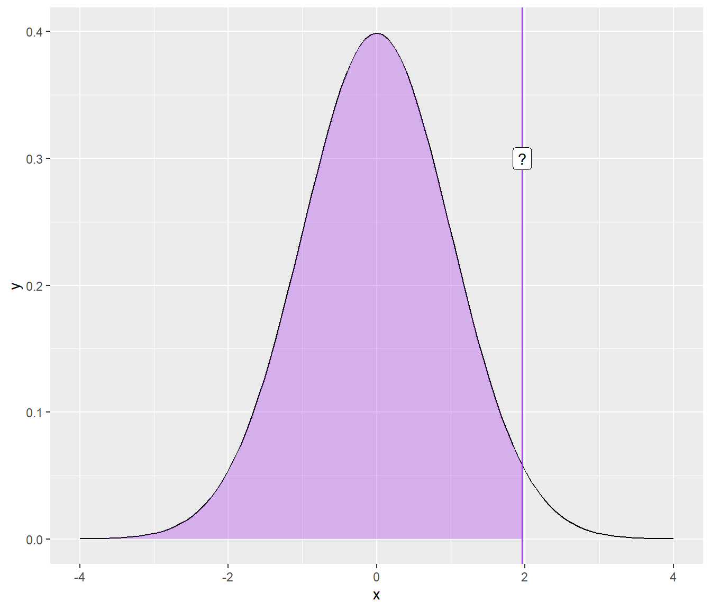

Warning: package 'tidyverse' was built under R version 4.2.3
Warning: package 'ggplot2' was built under R version 4.2.3
Warning: package 'tibble' was built under R version 4.2.3
Warning: package 'tidyr' was built under R version 4.2.3
Warning: package 'readr' was built under R version 4.2.3
Warning: package 'purrr' was built under R version 4.2.3
Warning: package 'dplyr' was built under R version 4.2.3
Warning: package 'stringr' was built under R version 4.2.3
Warning: package 'forcats' was built under R version 4.2.3
Warning: package 'lubridate' was built under R version 4.2.3
── Attaching core tidyverse packages ──────────────────────── tidyverse 2.0.0 ──
✔ dplyr 1.1.3 ✔ readr 2.1.4
✔ forcats 1.0.0 ✔ stringr 1.5.0
✔ ggplot2 3.4.3 ✔ tibble 3.2.1
✔ lubridate 1.9.2 ✔ tidyr 1.3.0
✔ purrr 1.0.2
── Conflicts ────────────────────────────────────────── tidyverse_conflicts() ──
✖ dplyr::filter() masks stats::filter()
✖ dplyr::lag() masks stats::lag()
ℹ Use the conflicted package (<http://conflicted.r-lib.org/>) to force all conflicts to become errors
library(ggpubr) #prettier figures
Warning: package 'ggpubr' was built under R version 4.2.3
Sampling Revisited
We use features of the sample (statistics) to inform us about features of the population (parameters). The quality of this information goes up as sample size goes up – the Law of Large Numbers. The quality of this information is easier to defend with random samples.
All sample statistics are wrong (they do not match the population parameters exactly) but they become more useful (better matches) as sample size increases.
Some Terminology
Population
Sample
\(\mu\) (mu) = Population Mean
\(\bar{X}\) (x bar) = Sample Mean
\(\sigma\) (sigma) = Population Standard Deviation
\(s\) = \(\hat{\sigma}\) = Sample Standard Deviation
\(\sigma^2\) (sigma squared) = Population Variance
\(s^2\) = \(\hat{\sigma^2}\) = Sample Variance
Population distribution
The parameters of this distribution are unknown. We use the sample to inform us about the likely characteristics of the population.
This distribution has a standard deviation, called the standard error of the mean. Its mean converges on\(\mu\).
Sampling distributions can be constructed around any statistic – ranges, standard deviations, difference scores. The standard errors of those distributions are also standard errors. (E.g., the standard error of the difference.)
We don’t actually have to take a large number of random samples to construct the sampling distribution. It is a theoretical result of the Central Limit Theorem. We just need an estimate of the population parameter, \(s\), which we can get from the sample.
We don’t actually have to take a large number of random samples to construct the sampling distribution. It is a theoretical result of the Central Limit Theorem. We just need an estimate of the population parameter, \(s\), which we can get from the sample.
Code
ggplot(data.frame(x =seq(min(means), max(means), by = .05)), aes(x)) +stat_function(fun =function(x) dnorm(x, mean =0, sd = se), size =1.5)

The sampling distribution of means can be used to make probabilistic statements about means in the same way that the standard normal distribution is used to make probabilistic statements about scores.
For example, we can determine the range within which the population mean is likely to be with a particular level of confidence.
Or, we can propose different values for the population mean and ask how typical or rare the sample mean would be if that population value were true. We can then compare the plausibility of different such “models” of the population.
The key is that we have a sampling distribution of the mean with a standard deviation (the Standard Error of the Mean) that is linked to the population:
\[SEM = \sigma_M = \frac{\sigma}{\sqrt{N}}\]
We do not know \(\sigma\) but we can estimate it based on the sample statistic:
\[\hat{\sigma} = s = \sqrt{\frac{1}{N-1}\sum_{i=1}^N(X-\bar{X})^2}\]
\[\hat{\sigma} = s = \sqrt{\frac{1}{N-1}\sum_{i=1}^N(X-\bar{X})^2}\]
This is the sample estimate of the population standard deviation. This is an unbiased estimate of \(\sigma\) and relies on the sample mean, which is an unbiased estimate of \(\mu\).
\[SEM = \sigma_M = \frac{\hat{\sigma}}{\sqrt{N}} = \frac{\text{Estimate of pop SD}}{\sqrt{N}}\]
(Most methods of calculating standard deviation assume you’re estimating the population \(\sigma\) from a sample and correct for bias.)
The sampling distribution of the mean has variability, represented by the SEM, reflecting uncertainty in the sample mean as an estimate of the population mean.
The assumption of normality allows us to construct an interval within which we have good reason to believe a sample mean will fall if it comes from a particular population:
This is referred to as a 95% confidence interval (CI). Note the assumption of normality, which should hold by the Central Limit Theorem, if N is sufficiently large.
ggplot(data.frame(x =seq(-4, 4)), aes(x)) +stat_function(fun =function(x) dnorm(x)) +stat_function(fun =function(x) dnorm(x),xlim =c(-1.96, 1.96), geom ="area", fill ="purple", alpha = .3) +geom_vline(aes(xintercept =1.96), color ="purple")+geom_vline(aes(xintercept =-1.96), color ="purple") +geom_label(aes(x =1.96, y = .3, label ="1.96"))+geom_label(aes(x =-1.96, y = .3, label ="-1.96"))

What if you didn’t know the value?
Code
ggplot(data.frame(x =seq(-4, 4)), aes(x)) +stat_function(fun =function(x) dnorm(x)) +stat_function(fun =function(x) dnorm(x),xlim =c(-1.96, 1.96), geom ="area", fill ="purple", alpha = .3) +geom_vline(aes(xintercept =1.96), color ="purple")+geom_vline(aes(xintercept =-1.96), color ="purple") +geom_label(aes(x =1.96, y = .3, label ="?"))+geom_label(aes(x =-1.96, y = .3, label ="?"))
What if you didn’t know the value?
Code
ggplot(data.frame(x =seq(-4, 4)), aes(x)) +stat_function(fun =function(x) dnorm(x)) +stat_function(fun =function(x) dnorm(x),xlim =c(-1.96, 1.96), geom ="area", fill ="purple", alpha = .3) +stat_function(fun =function(x) dnorm(x),xlim =c(-4, -1.96), geom ="area", fill ="green", alpha = .3) +stat_function(fun =function(x) dnorm(x),xlim =c(4, 1.96), geom ="area", fill ="green", alpha = .3) +geom_vline(aes(xintercept =1.96), color ="purple")+geom_vline(aes(xintercept =-1.96), color ="purple") +geom_label(aes(x =1.96, y = .3, label ="?"))+geom_label(aes(x =-1.96, y = .3, label ="?"))

What if you didn’t know the value?
Code
ggplot(data.frame(x =seq(-4, 4)), aes(x)) +stat_function(fun =function(x) dnorm(x)) +stat_function(fun =function(x) dnorm(x),xlim =c(-4, 1.96), geom ="area", fill ="purple", alpha = .3) +geom_vline(aes(xintercept =1.96), color ="purple")+geom_label(aes(x =1.96, y = .3, label ="?"))

qnorm(.975)
[1] 1.959964
The normal distribution assumes we know the population mean and standard deviation. But we don’t. We only know the sample mean and standard deviation, and those have some uncertainty about them.
That uncertainty is reduced with large samples, so that the normal is “close enough.” In small samples, the \(t\) distribution provides a better approximation.
For small samples, we need to use the t distribution with its fatter tails. This produces wider confidence intervals—the penalty we have to pay for our ignorance about the population. The form of the confidence interval remains the same. We simply substitute a corresponding value from the t distribution (using df =\(N -1\)).
The meaning of the confidence interval can be a bit confusing and arises from the peculiar language forced on us by the frequentist viewpoint.
The CI DOES NOT mean “there is a 95% probability that the true mean lies inside the confidence interval.”
It means that if we carried out random sampling from the population a large number of times, and calculated the 95% confidence interval each time, then 95% of those intervals can be expected to contain the population mean.
In previous years, incoming first year graduate students had an average coffee consumption of 7.6 cups per week and a standard deviation of 2.4.
The next incoming class will have 43 students. What range of exam means would be plausible if this class is similar to past classes (comes from the same population)?